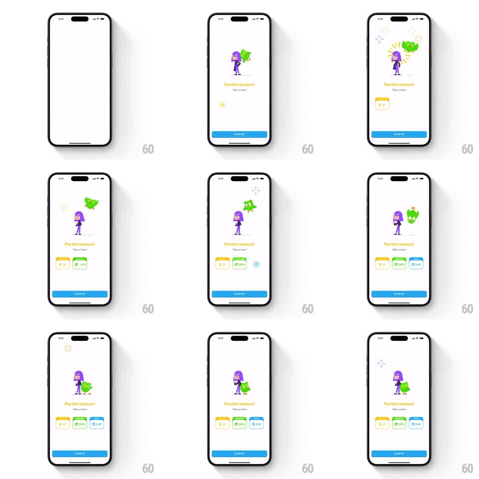

Media
Frame-by-frame

Rebuild this animation 1:1: Duolingo's perfect lesson celebration - Lily and Duo cheer center-screen as three reward cards pop in with a stagger and sparkle bursts fire around the characters.

Rebuild this animation 1:1: Duolingo's perfect lesson celebration - Lily and Duo cheer center-screen as three reward cards pop in with a stagger and sparkle bursts fire around the characters. ## Integration Integration: stack-agnostic spec - springs given as stiffness/damping, timed motions as duration + curve; map every value to your framework and animation library of choice. ## Scene A white lesson-complete screen: "Perfect lesson!" with "Take a bow!" beneath it, Lily (purple hair) standing beside an excited Duo who jumps at her side. Below the headline, three reward chips in a row: a yellow XP card (+19), a green "100%" accuracy card, and a blue timer card (2:01). A blue "CLAIM XP" button sits at the bottom. Sparkle particles flash around the characters. ## Motion spec Pattern: staggered reward reveal with character celebration, ~2s total. - The headline fades up first (300ms), then the characters spring in (scale 0.8 to 1, spring stiffness 340 damping 18), Duo bouncing beside Lily with a double-hop (two 150ms arcs). - The three reward cards pop in left to right (spring stiffness 400 damping 20, 150ms stagger), each with a slight overshoot. - Sparkle bursts (4-point stars, yellow and white) flash around the characters at 400ms intervals, each living 300ms. - Duo keeps a celebratory idle: small hops and wing flaps on a 1.2s loop while Lily bows her head once. - The CLAIM XP button fades up last (200ms). ## Calibration - The stagger order is fixed: headline, characters, cards, button. - Sparkles are sparse flashes, not a particle storm. ## Reduced motion All elements fade in together; characters static. ## Don't miss - Duo's excitement is motion - hops and flaps - while Lily's is a single bow. - The reward cards are three distinct colors with distinct icons.